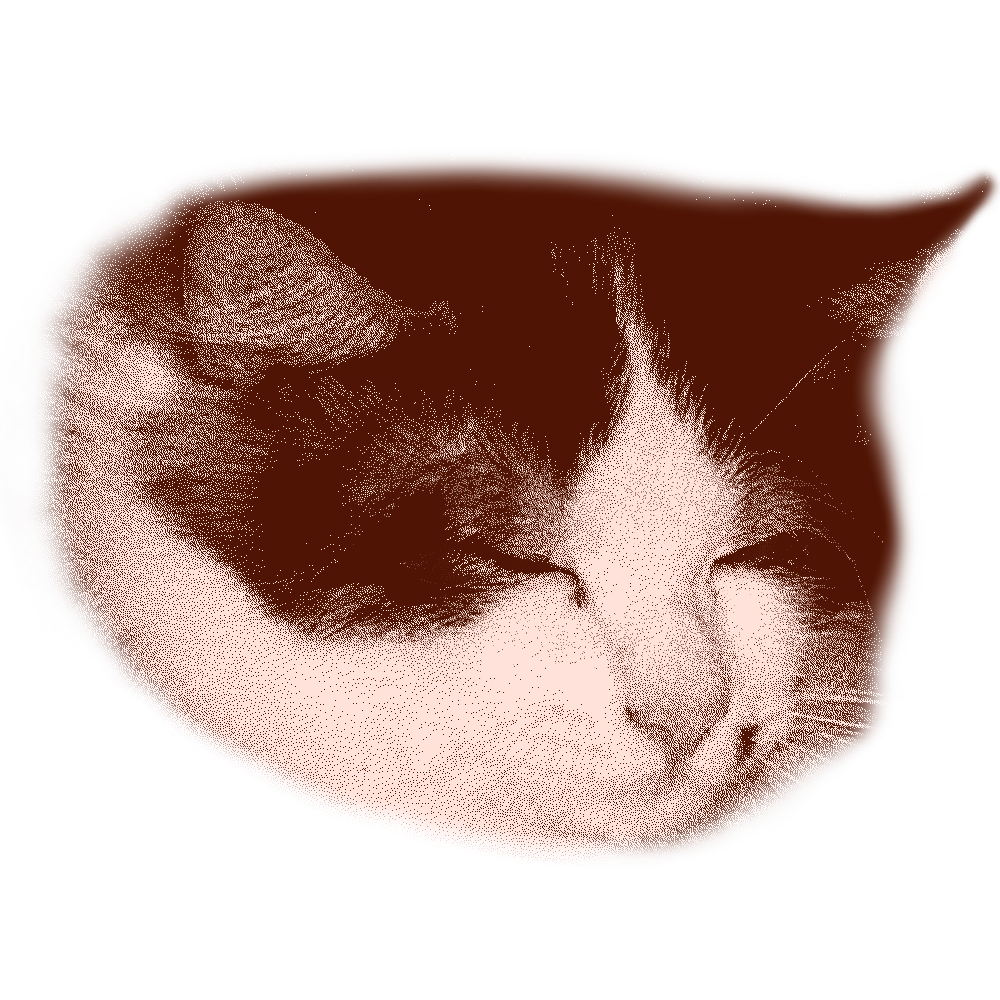
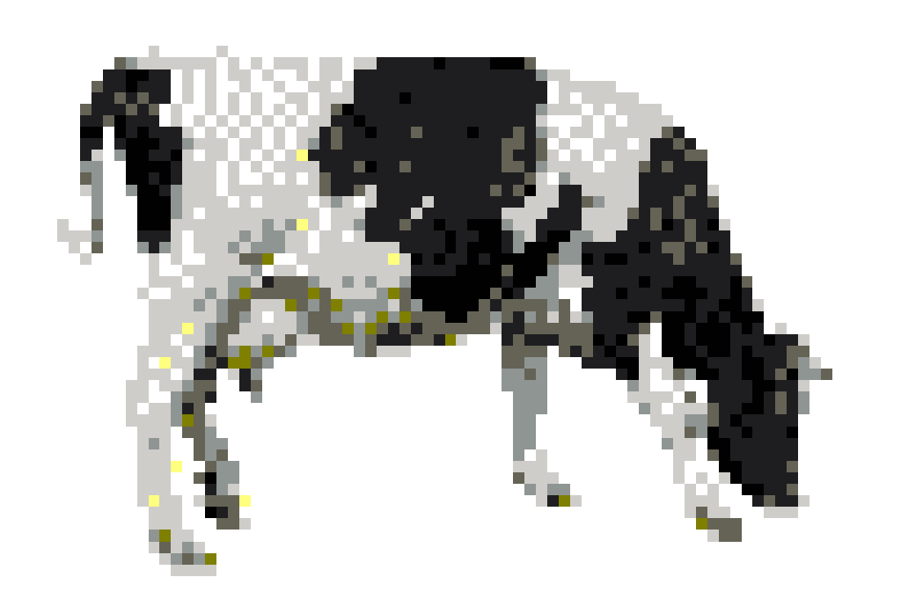

a quiet corner of the wired
NEET DAILY LOG
引きこもりの日記・写真・小さな生活
Một góc nhỏ để ghi lại những ngày bình thường — ảnh linh tinh, video vụn, thứ mình đang nghe và vài dòng không cần phải hoàn hảo.

online but hiding
★ KEEP THE OLD WEB ALIVE ★ NO ALGORITHM ★ HUMAN MADE HOMEPAGE ★
今日は何もしない ★ BEST VIEWED WITH A BLANKET & HEADPHONES ★
personal transmission
Những ngày gần đây
0
entries found
Không tìm thấy mẩu nhật ký nào… (╥﹏╥)

YOU HAVE REACHED THE END OF TODAY'S INTERNET
↑ quay lại nhật ký